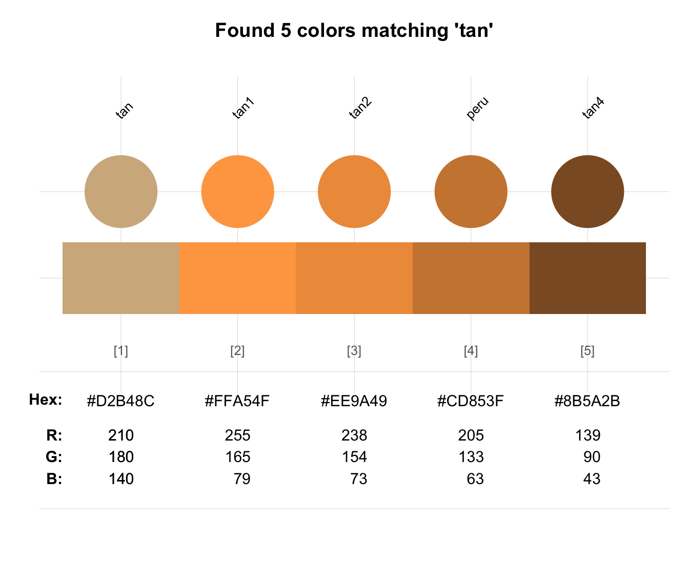
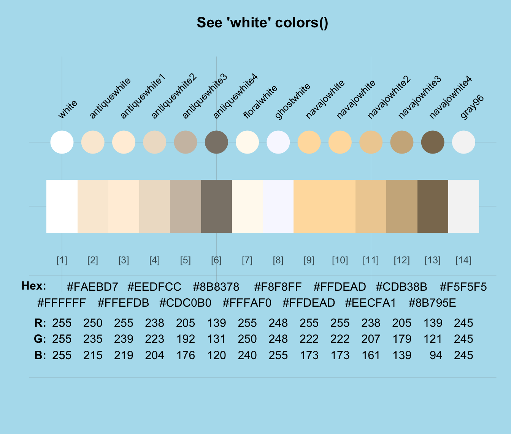
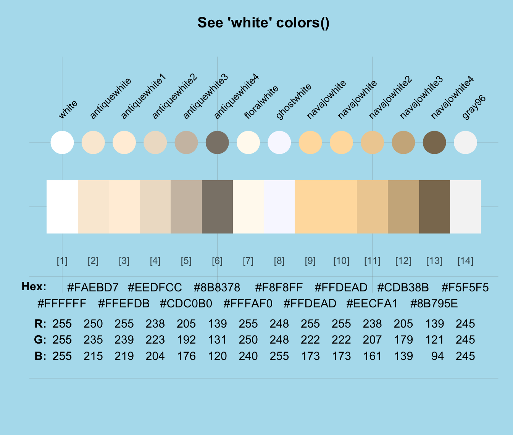

grepal returns a vector of colors whose names match a regular expression (regex).
Usage
grepal(pattern, x = colors(), ignore_case = TRUE, plot = TRUE)Arguments
- pattern
A regular expression (specified as a string/character object).
- x
A vector of R color names or a data frame of named colors (i.e., whose names can be searched). Default:
x = colors().- ignore_case
Should the case of pattern be ignored (passed to
ignore.caseof thegrepfunction)? Default:ignore_case = TRUE.- plot
Boolean: Plot the output (using
seecol)? Default:plot = TRUE.
Details
By default, the base R vector of named colors (i.e., colors()) is searched
for names matching a pattern (which can be a simple string or regular expression).
If x (i.e., the object to be searched) is provided,
it is must be a vector of color names or a data frame of named color objects
(i.e., a color palette).
If plot = TRUE, grepal also visualizes the detected colors
(by passing its result to seecol, as a side-effect).
This function facilitates searching colors by name and
yields (a vector of) colors of similar color hue (provided
that the color's hue is expressed in a color's name).
Its name grepal is an abbreviation of grep and "pal".
See also
seecol for viewing and comparing color palettes;
usecol for using color palettes;
simcol for finding similar colors;
newpal for defining new color palettes;
shades_of to defining shades of a given color;
ac for adjusting color transparency;
pal_unikn for the default uni.kn color palette.
Other color functions:
ac(),
demopal(),
newpal(),
seecol(),
shades_of(),
simcol(),
usecol()
Examples
grepal("tan")
#> Searching the elements of x

#> [1] "tan" "tan1" "tan2" "tan3" "tan4"
# With regular expressions:
some_grey <- grepal("gr(a|e)y", plot = FALSE)
#> Searching the elements of x
start_grey <- grepal("^gr(a|e)y", plot = FALSE)
#> Searching the elements of x
only_grey <- grepal("^gr(a|e)y$", plot = FALSE)
#> Searching the elements of x
length(some_grey)
#> [1] 224
length(only_grey)
#> [1] 2
# With other color objects (df as x):
grepal("blau", x = pal_unikn)
#> Searching the names of x
 #> seeblau5 seeblau4 seeblau3 seeblau2 seeblau1
#> 1 #008ECE #00A9E0 #59C7EB #A6E1F4 #CCEEF9
grepal("SEE", x = pal_unikn_pref, ignore_case = FALSE)
#> Searching the names of x
#> [1] NA
# Applications:
seecol(grepal("white"), col_bg = "lightblue2", main = "See 'white' colors()")
#> Searching the elements of x
#> seeblau5 seeblau4 seeblau3 seeblau2 seeblau1
#> 1 #008ECE #00A9E0 #59C7EB #A6E1F4 #CCEEF9
grepal("SEE", x = pal_unikn_pref, ignore_case = FALSE)
#> Searching the names of x
#> [1] NA
# Applications:
seecol(grepal("white"), col_bg = "lightblue2", main = "See 'white' colors()")
#> Searching the elements of x
 
olives <- grepal("olive", plot = FALSE)
#> Searching the elements of x
oranges <- grepal("orange", plot = FALSE)
#> Searching the elements of x
seecol(list(olives, oranges),
pal_names = c("olives", "oranges"),
main = "Comparing olives and oranges")

olives <- grepal("olive", plot = FALSE)
#> Searching the elements of x
oranges <- grepal("orange", plot = FALSE)
#> Searching the elements of x
seecol(list(olives, oranges),
pal_names = c("olives", "oranges"),
main = "Comparing olives and oranges")